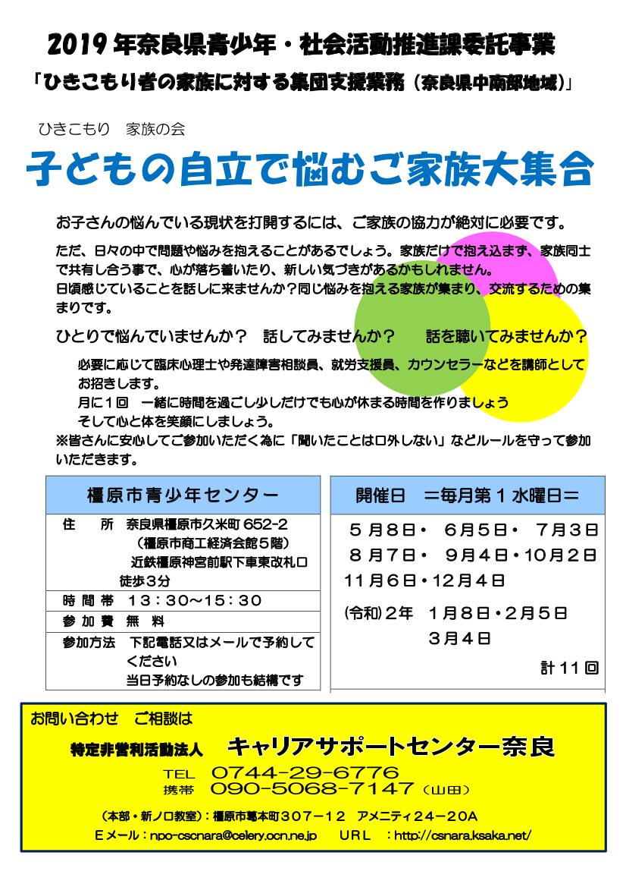

■ニート・ひきこもりの方の就職を応援します！  現在、奈良県委託事業として、ひきこもり当事者への居場所提供型支援事業や若年就職困難者職場実習等サポート事業を実施しています。奈良県 内の方で、ニート・ひきこもり状態からの自立を目指される皆様をサポートしています。 お気軽にお問い合わせください。 npo-cscnara@celery.ocn.ne.jp 私たちは、こういった方たちの“すてきな、あした”を実現するお手伝いをしています。 つ づきはこちらから